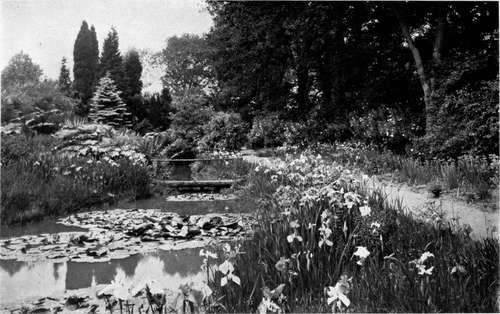
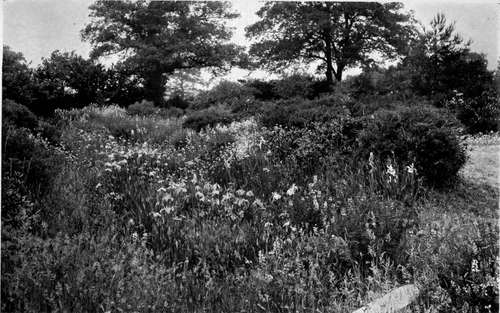
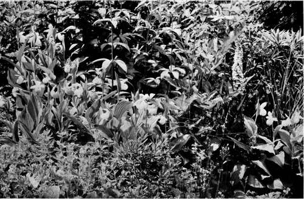
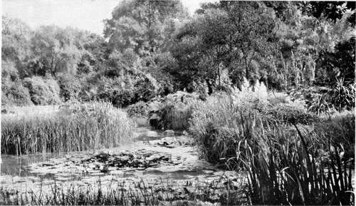

Chapter VIII. Peat Gardens
Description
This section is from the book "What England Can Teach Us About Gardening", by Wilhelm Miller. Also available from Amazon: What England Can Teach Us About Gardening.
Chapter VIII. Peat Gardens
How we can transform every bad-smelling, malaria-breeding, mosquito-haunted swamp into a healthful spot of unique beauty — no objection possible to bog gardens.
COME now, gentle reader, confess that you are prejudiced against this subject. The word "swamp" makes you think of chills and fever, snakes, green scum, mosquitoes, miasma, frogs, and all unpleasantness. If you have any other feeling you must be either a great traveller and a great reader, or an exceptional student of nature and gardening. The only attitude an "honest person" has toward wet places is to wish them all drained and filled with soil.
Drain them? Yes; but fill them, no! Draining alone will usually solve the health problem by exterminating the mosquitoes and, consequently, the malaria. But to fill low spots is often sheer waste. Many of the most gorgeous and interesting flowers in the world grow only in damp ground. To dump in soil is to destroy all possibility of enjoying a unique type of beauty. The city engineer and the real estate dealer often have to fill in such places, and country gentlemen unconsciously imitate their example. But grading is very costly. Why not take the money you expected to spend in filling a ravine or bit of damp woods and make a peat garden — the sort of thing pictured in this chapter?
Yet these illustrations do not show a thousandth part of the beauty of English "bog gardens." That phrase, however, I can not use in America. In England these words convey no unpleasant suggestion, because mosquitoes and malaria are practically nonexistent. But here they are a national curse. It may take a hundred years and millions of dollars to subjugate these foes. Therefore I have ventured to propose the phrase "peat gardens," because "peat" has only pleasant suggestions. It makes one think of acres of heather, the smell of burning peat, the clean, cool cushions of sphagnum moss, of orchids, pitcher plants, and the shyest beauties of the heath family.
The name "peat garden" is defective, however, in two respects. For peat in Europe is made by heather, while American peat is composed of fern root. Our peat is not so easy to use for fuel, and not so good for cultivating certain plants, especially greenhouse orchids. But the main objection to the phrase "peat garden" is that it must be used to cover two very different ideas, viz., the peat bog and the muck swamp. The latter is the commoner and less agreeable thing, for the soil is likely to be sour, and is full of the organisms of decay, while the waters of a sphagnum bog are antiseptic. They contain no bacteria or other organisms of decay, and that is why oak trees which have been blown into Irish bogs have remained in perfect condition for hundreds and even thousand of years. These sphagnum bogs are becoming rarer as the value of land increases, and it behooves us to save every one we can. For they are little wonder worlds of beauty and can never be replaced. I wish that every one who has to deal with dampi ground could visit with me the bog garden of Sir Henry Yorke, in Buckinghamshire. For at every step one's prejudices melt away until one is quite entranced by the revelations of a new and overwhelming kind of beauty. I dare say there are larger and older bog gardens, but even in its new state I am sure you would enjoy it.
WHY NOT DRAIN YOUR WET LAND, MAKE A STREAM OR POND LIKE THIS AND PLANT WATER-LILIES AND JAPAN IRIS? ROYAL HORTICULTURAL SOCIETY GARDEN. IMAGINE THESE FLOWERS TO BE SIX TO NINE INCHES ACROSS.
IRISES NATURALIZED IN A BROOK THAT RUNS DRY IN SUMMER. ROYAL HORTICULTURAL SOCIETY'S GARDEN. See plate go.
AMERICAN ORCHIDS IN AN ENGLISH GARDEN. THE SHOWY LADY'S-SLIPPER (Cypripediutt <pectabile) IS THE LARGEST AND MOST DESIRABLE OF HARDY ORCHIDS; IT CAN BE GROWN WITH PERMANENT SUCCESS ONLi IN THE PEAT GARDEN. See page 70.
A BOG GARDEN IN HYDE PARK WHICH IS ENJOYED BY THOUSANDS OF PEOPLE IN LONDON EVERY YEAR. Saxi^raga peltata, WATER LI LIES, GUNNERA AND RHEUM.
Suppose, then, that we have left the house and entered a piece of woods of, perhaps, ten acres. Most of us would become enthusiastic at once because of the century-old trees. But to Sir Henry it had seemed an uninteresting and badly neglected spot. You and I might exclaim with pleasure at the sight of acres of ferns growing as tall as a man, and foxgloves blooming by the million. But these are familiar sights to an Englishman. He knows that brakes are the weediest of all ferns, and the colour of the wild foxglove is undeniably crude and coarse, when you come to live with big masses of it.
So you must not shiver when I say that it was right to sail in and destroy a five-acre patch of this undergrowth. For there is another and higher type of beauty which belonged by divine right to the soil long before these cosmopolitan tramps — the brakes and foxgloves — usurped the land.
And please do not shudder at the idea of chopping down dozens of trees that were a hundred years old. Sir Henry had plenty more. And beside, in every wood that is simply let alone there are too many trees. The best thing that can be done is to thin out the short-lived kinds and the crooked individuals, so that the noblest specimens may have a chance to develop their grandest proportions. (See plate 5.)
Even more thinning than this Sir Henry did, and wisely. For you cannot have flowers without a certain amount of light, and even the most sentimental tree lover would not like to breathe a close, stuffy atmosphere, or walk in a grove that is damp under foot and gloomy over head. The moment you enter Sir Henry's bog garden you instinctively draw a deep breath of fresh, pure air, and you exclaim with delight at the pleasant interplay of light and shade, of sunny warmth and leafy coolness. There is no question of lifting skirts or getting wet feet, for there are good dry paths everywhere.
Continue to:
Tags
garden, flowers, plants, England, effects, foliage, gardening